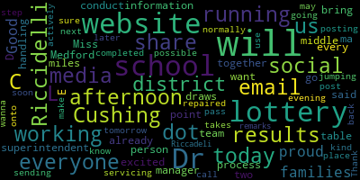

[Cushing]: Good afternoon, ladies and gentlemen, and thank you for joining us for our middle school lottery today. Really appreciate you taking the time and the interest in your children's future as you head to middle school. Do you want to let you know that we are broadcasting as well on YouTube. So if you would like to go back and watch this process again, it will be on the district YouTube channel. At this time, I'd like to just introduce our people around the table. We have Kim Miles, who is our data coordinator and really is the person who helps to really build the lottery and make sure that everything is done in a very up and up fashion. Bernadette Riccardelli, our director of curriculum instruction. And our superintendent, who I'm now turning it over to, Dr. Maurice-Edouard-Vincent. For those of you who don't know, I guess I should introduce myself. My name is Dr. Pete Cushing, and I'm the assistant superintendent of secondary, and really looking forward to working with your children as they move up to middle school next year. But without any further ado, Dr. Edouard-Vincent.
[Edouard-Vincent]: Good afternoon, families. I am your very proud superintendent, and I'm very excited to be here this afternoon. to have us conduct the middle school lottery. And again, as Dr. Cushing already said, everyone who's at the table, this is the team that has been working together to bring about today's lottery. Dr. Riccidelli will be the point person that you email. Be Riccidelli, R-I-C-C-I-A-R-D-E-L-L-I at Medford. dot k 12 dot ma.us. This is again, a process that as we go through each school, there will be two draws for every school. And Miss miles out there manager will be handling all of that information. I do want to share today that our school website is down, they are servicing it. So Once the lottery is completed, we will be sending emails out later on this evening. And we will also be posting the results on social media until the website is up and running again. So normally, the lottery takes place and we post it as soon as possible onto the district website. But the district website is down, it is being repaired. but it may not be up and running until tomorrow. So they are actively working on it, but we will get the results to you and we will also use social media. So I wanna make sure that everyone can kind of know what to do, what their next step should be. Thank you for jumping on this call and I'm going to pass it back to Dr. Cushing or Dr. Riccadeli if they would like to share a few remarks.
[Ricciardelli]: So good afternoon, families. It's great to see you. This is a really exciting day for our grade five students. So you will learn soon what middle school you're going to, whether it's the McGlynn or the Andrews, you're going to a great place. So parents, you did receive a memo. So once you find out what school your student is going to, there is a welcome orientation. So if you refer back to that memo, May 10th from six to eight at the McGlynn Middle School, and May 12 from 6 to 8 at the Andrews Middle School. So I know you have that memo, but I just want to call your attention. You will have an opportunity to visit those schools and you will know which school your child is going to at that point. Dr. Cushing, do you have anything else to add? Otherwise, we can go right over to Ms. Miles and she can begin the lottery poll. We'll begin at the Brooks.
[Cushing]: The most harrowing part is making sure that the printers are working.
[Unidentified]: Don't remind me I had a technical difficulty but. So the Brooks Lottery won. Brooks School first draw. And we'll do Brooks School again second draw. do do So the program that we use is called StatTrack and it's a random number generator.
[Cushing]: that you put in the parameters, and it will generate the numbers to the individual schools. I gotta say, right now, seeing so many middle schoolers on the call, I know many of you don't have your cameras on, but I gotta say, for those of you that do, you've got some really cool broadcast setups there as well. In particular, Ryan, I'd like to give Ryan a shout out, because that is an awesome setup. I want to say, though, that it's good to see, like, some other kids here. Lee and Lam, all right, maybe with a friend or a brother or sister, I don't know, but it's really good to see so many of you here and taking an interest in your future, and it's really, really awesome. So, you know, as we move to our next... The McGlynn Lottery 1. McGlynn Lottery 1 is complete. We'll now move to McGlynn lottery number two.
[Unidentified]: McGlynn Lottery 2 is complete.
[Ricciardelli]: The next school we will be going to is the Mississippi.
[Cushing]: Lottery number one is complete. Mrs. Tucker, lottery number two coming up at this time.
[Unidentified]: You might have a note. Sorry, we are out of paper. Just give me a moment.
[Cushing]: And the Mississauga lottery number two is complete. I also just posted in the chat in case any of you don't have it the YouTube channel for the district. I added that link to the chat for anybody who might be interested. We do broadcast most of our events there, school committee meetings, meetings, such as these and other student focused events. We do post and broadcast there.
[Unidentified]: So, now it's Robert's Robert's onto the rocks. One complete.
[Cushing]: The Roberts Elementary School try number one is complete.
[Unidentified]: And that completes Robert's.
[Cushing]: Robert's school is now complete and all of our lottery drawers are complete. Wanted to let everybody know that you have two great middle schools in Medford. And on May 10th from 6 to 8, the McGlynn will be having an open house. And on May 12, 2022, the Andrews will be having an open house. What we're going to do now is going to take these, I'm going to scan them into our Google Drive or my Google Drive, and then I will share them out as quickly as possible to our district Facebook page, which I just put in the chat as well in case you are unaware of it. You do not need to be a member of Facebook to view it. It's open to all. The link will be posted there and you will be able to find it. And I will try to do that as quickly as possible as the district and city websites may be still down for service. We will be having them posted to the email system as well. So check your email if you have trouble getting to Facebook. But that takes just a few minutes to generate and to push out. Once again, I really want to thank you for taking the time today. and I hope you have a wonderful evening. If you have any questions, don't hesitate to email us at briccadelli at medford.k12.ma.us or pcushing at medford.k12.ma.us. Thank you all for being here, and as always, it's a great day to be a Mustang.
|
total time: 1.96 minutes total words: 265  |
|||
{kind=link}